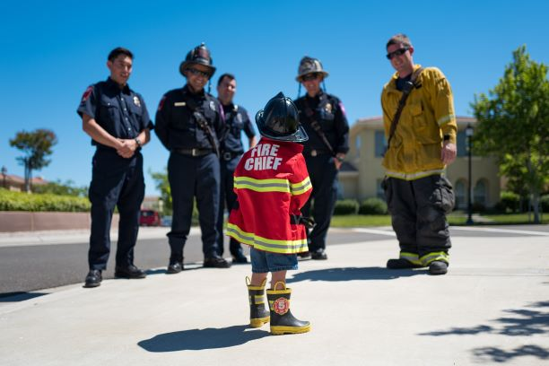

Fire district needs new commissioner
By NECIA P. SEAMONS The Preston Citizen editor
Photo by Hamza El-Falah on Unsplash
The Franklin County Fire Protection District is seeking to immediately fill the position of District #2 Commissioner. The applicant will represent the Banida, Riverdale, Thatcher and northeast portion of Preston areas of Franklin County and was held by Brian Checketts. He served a year and a half on the commission and resigned for personal reasons. The appointee will fill the position until the term is complete in 2023, and will be announced in the Aug. 4 commission meeting. Interested persons should email fcfc83263@gmail.com by July 15, 2021. (More information here.)
Contact Us
The Weather Duck
5555 Main Street
Preston, ID 83263
☏ 555-555-5555
✉ info@theweatherduck.com